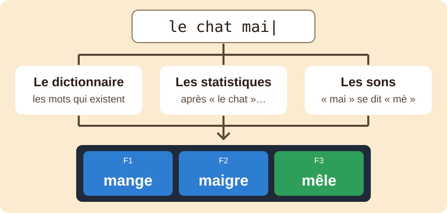

Pour les curieux
Comment Pépite trouve-t-il les mots ? Et où vont tes mots ? Des réponses simples, pour les grands et les petits.
Pourquoi « Pépite » ?
Pépite a été développé par un papa pour sa petite fille, qu'il surnomme « Cookie ». Un cookie, c'est un biscuit plein de pépites de chocolat : le nom « Pépite » est donc un clin d'œil à son surnom. Et une pépite, c'est aussi quelque chose de précieux, comme chaque mot que tu écris.
Trois aides qui travaillent ensemble

Le dictionnaire
Pépite connaît plus de 100 000 mots français, et sait lesquels on emploie souvent. Ils viennent de Lexique, une grande base de mots faite par des chercheurs.
Les statistiques
Pépite a compté quels mots se suivent dans des textes écrits. Ces textes sont des livres anciens pour enfants, l'encyclopédie Vikidia, des phrases d'exemple et des articles d'actualité. Après « il fait », on trouve souvent « beau ». Seuls ces comptes sont gardés, pas les textes.
Les sons
Pépite sait comment chaque mot se prononce. Tu écris « orizon » ? Il entend « horizon ». C'est la case verte.
Il repère aussi les lettres inversées ou oubliées : la case orange.
Pépite n'est pas une machine qui pense. C'est un dictionnaire, des comptes de mots et des sons, rangés avec soin.
Les accords et l'orthographe
Pour accorder les mots, Pépite doit savoir si un mot est un nom, un verbe, s'il est au pluriel… Il le lit dans le lexique de Grammalecte, un correcteur libre. Les règles d'accord sont celles de Pépite.
Le rond d'orthographe ✓ utilise aussi la liste de mots de Grammalecte.
Les images
Les images des mots viennent d'ARASAAC, une collection de pictogrammes faite pour aider à communiquer. Leur auteur est Sergio Palao. Elles sont gratuites, mais seulement pour un usage non commercial.
Les petits mots abstraits (« le », « de », « est »…) n'ont pas d'image : une image fausse gênerait plus qu'elle n'aiderait.
Les voix
Les voix Siwis (une femme) et Pierre (un homme) sont des voix de synthèse. Un programme fabrique la voix sur ton ordinateur, sans Internet. Il a été préparé avec des heures d'enregistrements d'une vraie personne qui lit des phrases.
La voix Pierre a été fabriquée à partir d'une voix anglaise. Les enregistrements de cette voix anglaise sont réservés à la recherche. Si cela pose un problème, la voix Pierre pourra être retirée d'une version future.
Les voix de Windows (comme Hortense) marchent aussi.
Ce qui reste privé

- Pépite n'utilise jamais Internet. Rien ne sort de l'ordinateur.
- Ce que tu tapes n'est pas enregistré. Pépite garde seulement tes réglages et les mots que tu as ajoutés.
- Dans un champ de mot de passe, Pépite ne regarde rien.
- Pépite est un logiciel libre : tout le monde peut lire son code et vérifier.
Pour les adultes : Vie privée.